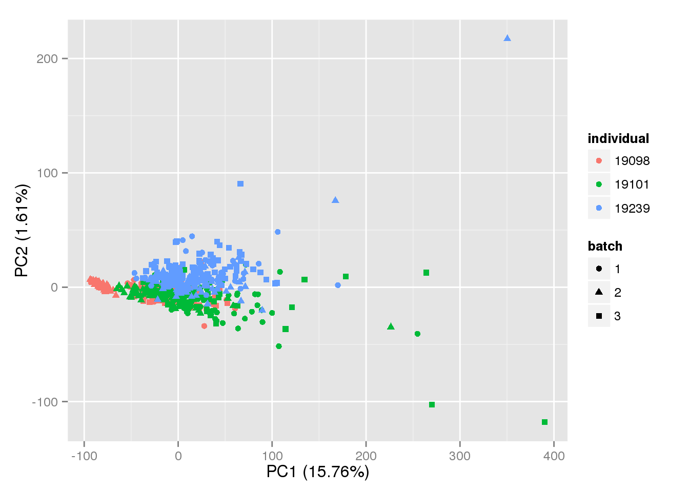
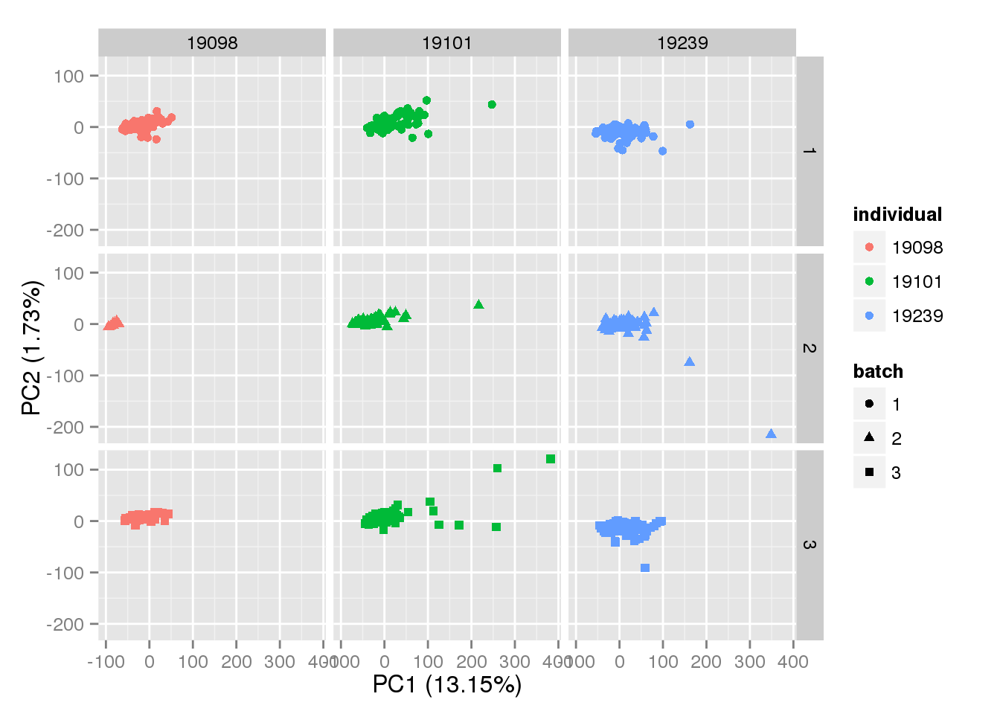

Last updated: 2015-07-07
Code version: dd7c5e7a33a14f1e73896fbe0b7bcea2e9219c42
Ding et al. 2015 developed GRM to perform ERCC-based normalization using a gamma regression model. I downloaded GRM-0.2.1.tgz on 2015-06-29.
cd ~/src
wget http://wanglab.ucsd.edu/star/GRM/files/GRM-0.2.1.tgz
tar xzf GRM-0.2.1.tgzUnfortunately it is not an R package, but a standalone R script. Furthermore, it loads unnecessary libraries (needed for making the plots in their paper) and loads the main function via source using a relative path. Luckily it appears it will be easier to just use that function directly since the script loads the data as csv files in a specific format.
The main function is gammareg in include/GRM_lib.r. The only external library it requires is MASS (for the function gamma.dispersion).
I looked at the tutorial files. The ERCC data it uses are the relative concentrations from the ERCC documentation (it uses Mix 2, whereas our data uses Mix 1).
library("edgeR")
source("functions.R")Input and prepare single cell data.
molecules <- read.table("../data/molecules.txt", header = TRUE,
stringsAsFactors = FALSE)
anno <- read.table("../data/annotation.txt", header = TRUE,
stringsAsFactors = FALSE)
molecules_single <- molecules[, grep("bulk", colnames(molecules), invert = TRUE)]
quality_single_cells <- scan("../data/quality-single-cells.txt",
what = "character")
# Remove low quality cells
molecules_single <- molecules_single[, colnames(molecules_single) %in%
quality_single_cells]
anno_single <- anno[anno$sample_id %in% quality_single_cells, ]
# Remove unuexpressed genes
expressed_single <- rowSums(molecules_single) > 0
molecules_single <- molecules_single[expressed_single, ]
# Remove "overexpressed" genes
# This removes some ERCC b/c of 19098 batch 2
overexpressed_genes <- apply(molecules_single, 1, function(x) any(x >= 1024))
molecules_single <- molecules_single[!overexpressed_genes, ]
# Correct for collision probability
molecules_single <- -1024 * log(1 - molecules_single / 1024)
# Calculate cpm
molecules_single_cpm <- cpm(molecules_single)The main function is gammareg.
source("GRM.R")It has four required arguments.
formals(gammareg)$ercc_response
$ercc
$gene
$filename
$SE
[1] FALSEBelow is documentation the authors provided interspersed with my code to prepare the data.
# ercc_response file: the fpkm reads for ERCC across all the samples
# format: each row is each ERCC, each column is each sample
# especially sorted by the ERCC names
ercc_response <- molecules_single_cpm[grep("ERCC", rownames(molecules_single_cpm)), ]
stopifnot(nrow(ercc_response) <= 92)77 ERCC spike-ins have greater than 0 molecules but less than 1,024.
# ercc file: the add-in standard ERCC concentration, gotten from the experiments directly
# format: each row is each ERCC, each column is each sample
# the first column is ERCC name, the second column is ERCC standard concentration.
# especially sorted by the ERCC names
ercc <- read.table("../data/ercc-info.txt", header = TRUE, sep = "\t",
stringsAsFactors = FALSE)
colnames(ercc) <- c("num", "id", "subgroup", "conc_mix1", "conc_mix2",
"expected_fc", "log2_mix1_mix2")
head(ercc) num id subgroup conc_mix1 conc_mix2 expected_fc log2_mix1_mix2
1 1 ERCC-00130 A 30000.000 7500.00000 4 2
2 2 ERCC-00004 A 7500.000 1875.00000 4 2
3 3 ERCC-00136 A 1875.000 468.75000 4 2
4 4 ERCC-00108 A 937.500 234.37500 4 2
5 5 ERCC-00116 A 468.750 117.18750 4 2
6 6 ERCC-00092 A 234.375 58.59375 4 2ercc <- ercc[, c("id", "conc_mix1")]
stopifnot(nrow(ercc) == 92)
# Sort by ERCC id
ercc <- ercc[order(ercc$id), ]
# Remove those the had been filtered
ercc <- ercc[ercc$id %in% rownames(ercc_response), ]
stopifnot(nrow(ercc) == nrow(ercc_response))# gene file: the fpkm reads for genes across all the sampels
# format: each row is each gene, each column is each sample
# especially the column names should be in the same order with ercc_response file
gene <- molecules_single_cpm[grep("ERCC", rownames(molecules_single_cpm),
invert = TRUE), ]# filename: the vector for all the samples' names
# format: it should be a 1*n vector in character variable type
filename <- colnames(molecules_single_cpm)This takes a long time to run.
grm_rds <- "../data/grm.rds"
if (file.exists(grm_rds)) {
results <- readRDS(grm_rds)
} else {
results <- gammareg(ercc_response = ercc_response, ercc = ercc, gene = gene,
filename = filename)
saveRDS(results, grm_rds)
}invariant_genes <- apply(results$predictset, 1, var) == 00 genes are invariant.
pca_grm <- run_pca(results$predictset[!invariant_genes, ])p <- plot_pca(pca_grm$PCs, explained = pca_grm$explained,
metadata = anno_single, color = "individual",
shape = "batch", factors = c("individual", "batch"))
p
p + facet_grid(batch~individual)
sessionInfo()R version 3.2.0 (2015-04-16)
Platform: x86_64-unknown-linux-gnu (64-bit)
locale:
[1] LC_CTYPE=en_US.UTF-8 LC_NUMERIC=C
[3] LC_TIME=en_US.UTF-8 LC_COLLATE=en_US.UTF-8
[5] LC_MONETARY=en_US.UTF-8 LC_MESSAGES=en_US.UTF-8
[7] LC_PAPER=en_US.UTF-8 LC_NAME=C
[9] LC_ADDRESS=C LC_TELEPHONE=C
[11] LC_MEASUREMENT=en_US.UTF-8 LC_IDENTIFICATION=C
attached base packages:
[1] stats graphics grDevices utils datasets methods base
other attached packages:
[1] testit_0.4 ggplot2_1.0.1 MASS_7.3-40 edgeR_3.10.2 limma_3.24.9
[6] knitr_1.10.5
loaded via a namespace (and not attached):
[1] Rcpp_0.11.6 magrittr_1.5 munsell_0.4.2 colorspace_1.2-6
[5] stringr_1.0.0 plyr_1.8.2 tools_3.2.0 grid_3.2.0
[9] gtable_0.1.2 htmltools_0.2.6 yaml_2.1.13 digest_0.6.8
[13] reshape2_1.4.1 formatR_1.2 evaluate_0.7 rmarkdown_0.6.1
[17] labeling_0.3 stringi_0.4-1 scales_0.2.4 proto_0.3-10